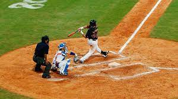

A játékot két kilencfős csapat játssza kilenc játékrészen át. A játékrészt a baseballban inningnek hívják, egy inningen belül előbb a hazai csapat védekezik, a vendég támad, majd ha véget ért a támadás, felcserélődnek a szerepek. Időkorlát nincs, egy fél inning addig tart, amíg a támadócsapatból ki nem esik három ember. Pontot kizárólag a támadó, azaz ütő csapat szerezhet, méghozzá úgy, hogy valamelyik játékosa körbeér a négyzet alakú pályán – egy akción belül bármennyi pontot szerezhetnek, amíg ki nem esik a harmadik játékosuk.
